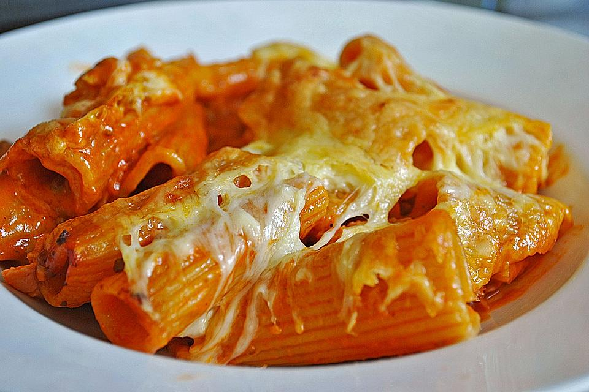

Rigatoni Al Forno

Description
Pasta Back with creamy minced meat tomato sauce. One of my favorite meals as it is super close to what I use dto eat at my favorite italian restaurant where I grew up.
Ingredients
- 3tbs Olive Oil
- 150g Minced Beef
- 3tbs Tomato Puree
- 200ml Vegetable Stock
- 200ml Cream
- 1tbs Butter
- 50g Parmesan
- Salt
- Cayenne Pepper
- 300g Rigatoni
- 200g Grated Cheese
Steps
- brown minced beef in olive oil
- add 1 tbs of tomato purree and fry with the minced beef
- add vegetable stock and cream
- stir remaining tomato puree under
- leave sauce and meat to cook on medium heat for 15 minutes and stir occasionally
- cook pasta water with a little salt
- boil pasta as per instructions
- drain pasta
- preheat oven at 200 degrees Celsius
- melt butter in sauce
- add parmesan to sauce
- add salt and carefully add cayenne pepper
- stir well
- add cooked pasta into the sauce and mix well
- poor pasta sauce mix into and oven dish
- cover with grated cheese generously
- bake in oven till the cheese in melted and slightly brown depending on how you like it. 10 to 15 minutes.